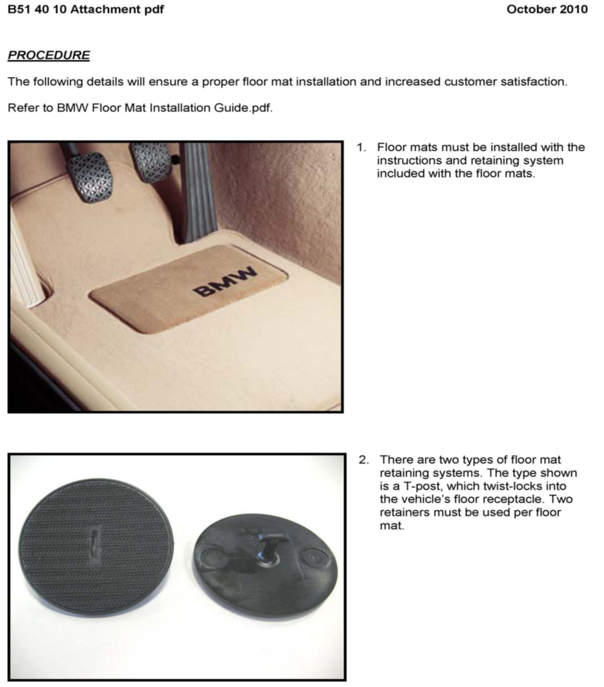
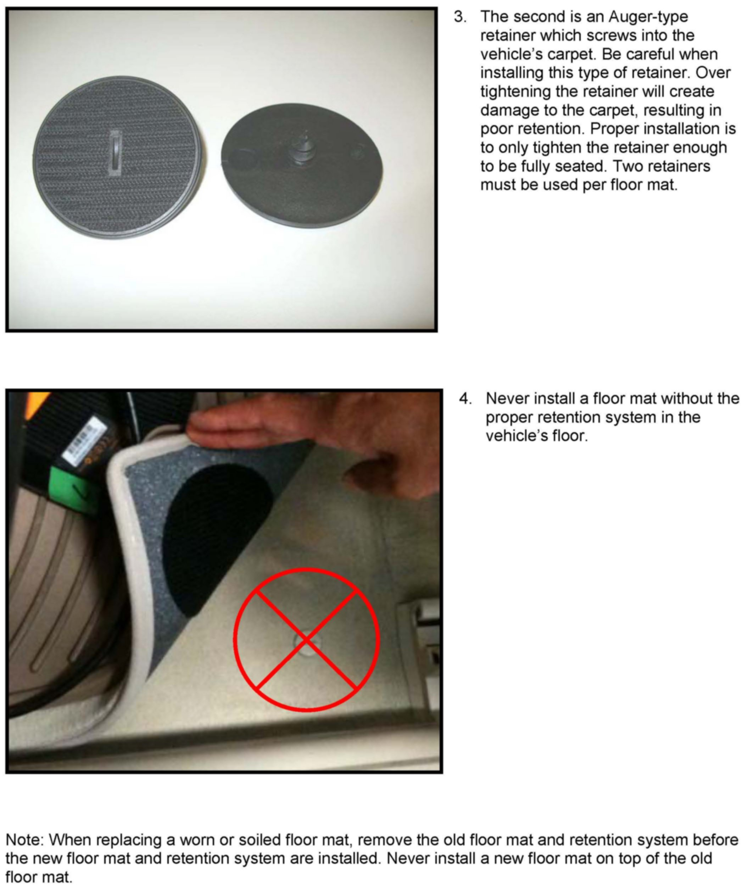
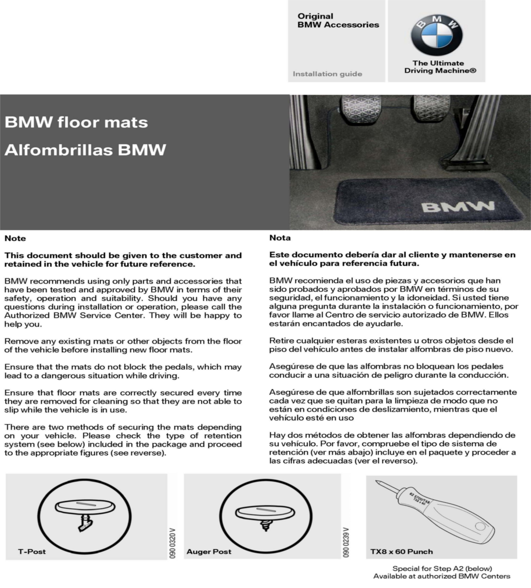
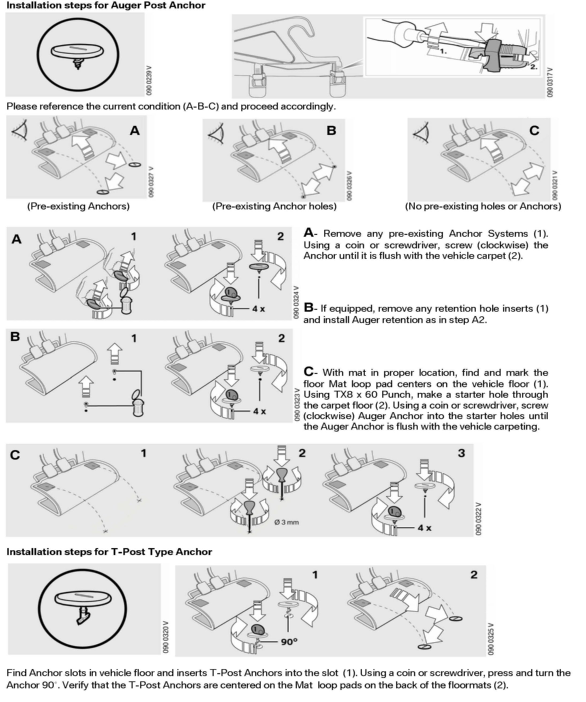

Interior - Proper Installation Of Carpet Floor Mats
SI B51 40 10Body Equipment
November 2010
Technical Service
SUBJECT
Proper Installation of BMW Carpet Floor Mats
MODEL
All
SITUATION
The intent of this bulletin is to ensure proper carpet floor mat installation and increase customer satisfaction. Our internal quality observations have shown that improper floor mat installation can occur during the new car preparation or when the service department is detailing the interior. Also, the customer or car wash attendant may remove the floor mats for interior cleaning. This can lead to damage to the retaining system and result in improper installation. The installation guide attached is also included with the new floor mat sets. These installation instructions must be reviewed and followed while installing the floor mats. The installation guide must also be given to the customer for future reference.
CAUSE
The center installations of floor mats are inconsistent.
PROCEDURE
Refer to attachment B514010.pdf
ATTACHMENTS


B51 40 10 - Procedure


B514010 - Floor Mat Installation Guide